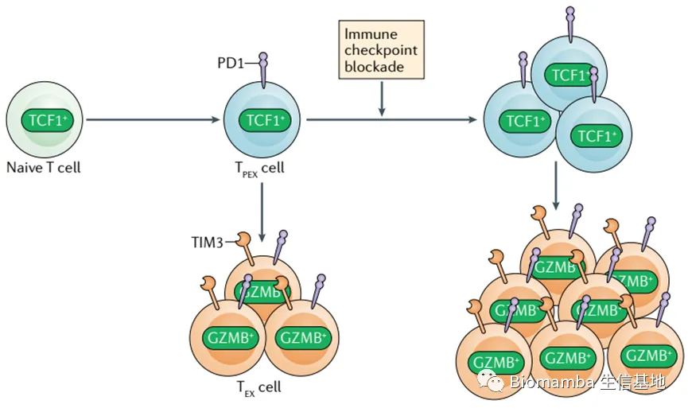
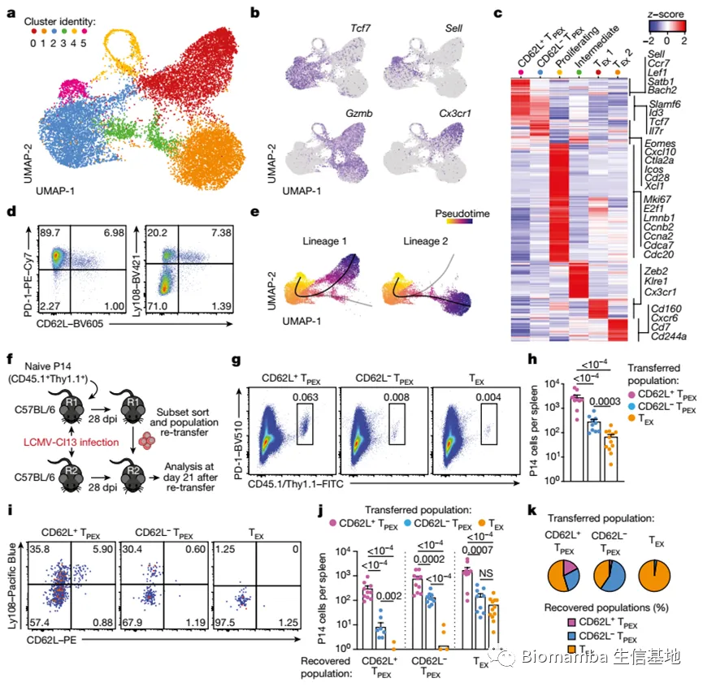
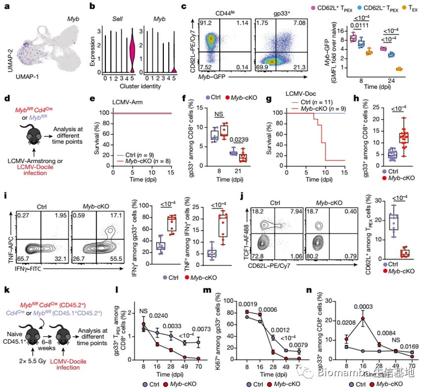
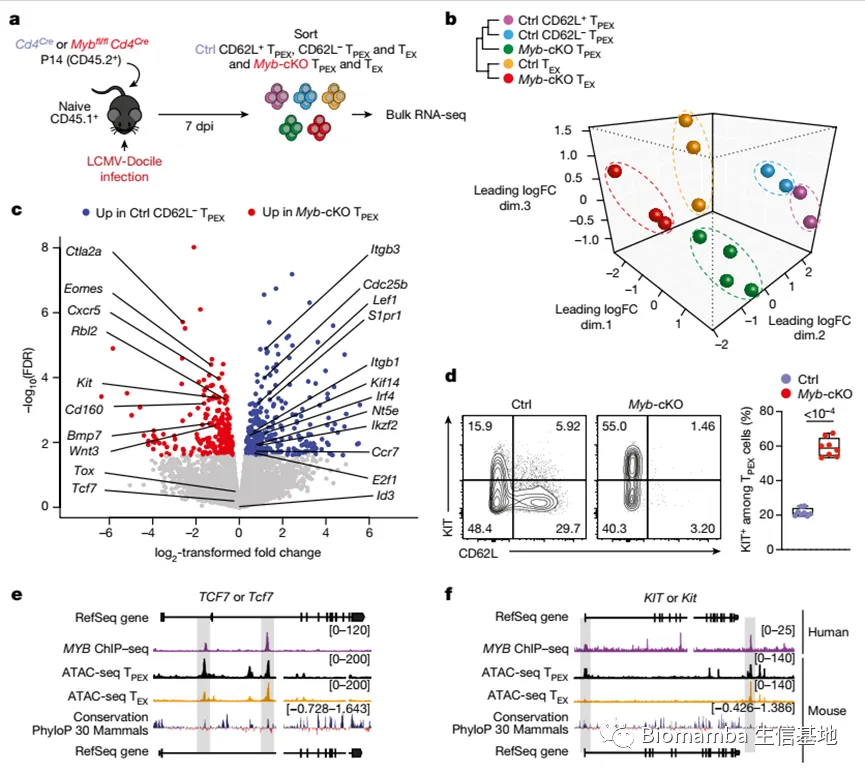
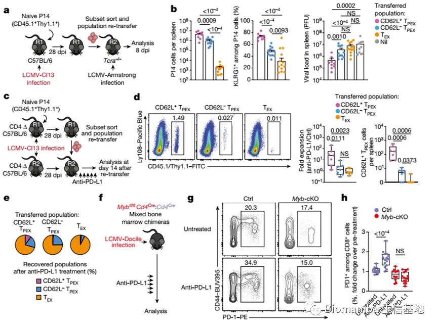

《Nature》：MYB调控衰竭性T细胞对检查点抑制的响应
原文：https://mp.weixin.qq.com/s?__biz=MzAwMzIzOTk5OQ==&mid=2247498939&idx=2&sn=b63958fb8f28af052036f4ffc05e2fc2&chksm=9b3c85ebac4b0cfdf3fda8f7236c50db168de20ff4795db7af9d6a0b45304e3f6fb3ba888694#rd 合集：单细胞教程全收录 / 文献速递
Biomamba
我们曾经说过，单细胞测序最成功的应用领域仍是肿瘤学。原因方面，肿瘤组织异质性高是其一，单细胞领域衍生了很多与肿瘤分析相关的算法与packages是其二。肿瘤学仍有许多未解之谜，另一边单细胞测序也在蓬勃发展，这两个学科也算交相辉映、相得益彰。
另一个成功应用领域便是免疫方面，免疫微环境的复杂程度恰好与单细胞测序的分辨率相匹配，因此后者被广泛应用于对于免疫细胞种类、比例、细胞状态的研究。
今天的这篇文章便是利用scRNA-Seq解析耗竭性T Cell与免疫检查点的关系，题为
doi:
10.1038/s41586-022-05105-1
链接：
https://www.nature.com/articles/s41586-022-05105-1
Abstract
● 背景介绍
对慢性病毒感染或癌症作出反应的CD8+ T 细胞的特征是抑制受体的表达，如程序性细胞死亡蛋白1 (PD-1) 和细胞因子 的产生受损。这种受抑制的功能状态被称为T细胞衰竭 状态，是由表达转录因子T细胞因子1 (TCF1)的T细胞(TPEX)前体维持的，它自我更新并产生TCF1−耗尽的效应T细胞3 – 6。

● 文中发现的现象
在这里，我们展示了在慢性感染过程中耗尽的T细胞的长期增殖潜能、多能性和再生能力被选择性地保存在一小群转录不同的CD62L+ TPEX细胞中。转录因子MYB不仅对CD62L+ TPEX细胞的发育和抗病毒CD8+ T细胞应答的维持至关重要，而且还能诱导功能衰竭，从而防止致命的免疫病理。此外，PD-1检查点抑制的增殖爆发仅来源于CD62L+ TPEX细胞，并依赖于MYB。
● 结论
我们的研究发现，CD62L+ TPEX细胞是一种干细胞样细胞群，对维持长期抗病毒免疫和免疫治疗反应至关重要。此外，他们表明MYB是耗尽T细胞反应的两个基本方面的转录协调者:效应功能的下调和自我更新能力的长期保存。
Background
● （1）T细胞衰竭是慢性感染和癌症中对持续抗原刺激的一种重要生理适应，虽然它可以防止过度的免疫介导的组织损伤，但它也有助于病毒或肿瘤的持续性1,2,4,7（首先是介绍什么是T细胞耗竭）。
● （2）TPEX细胞具有持续自我更新的能力，并产生功能受限的效应细胞，因此在维持慢性抗原刺激的T细胞及其耗尽表型3 - 5,8,9中具有重要作用，TPEX细胞还介导对治疗性检查点抑制的反应3,5,10,11，这可以重新激活耗尽的CD8+ T细胞反应，并已彻底改变了癌症治疗12。（介绍T细胞耗竭中的TPEX）。
● （3）在小鼠中，TPEX细胞由PD-1、转录调控因子TCF1和ID3以及表面分子CXCR5和Ly108共同表达确定。而耗尽的效应T (TEX)细胞共表达PD-1和TIM-3，但缺乏TCF1、ID3、CXCR5和Ly108的表达(3 - 6、8、9、13)，因此，耗尽的CD8+ T细胞构成了一个动态的网络，其表型和功能不同，最终取决于TPEX细胞的功能（为什么取决于TPEX细胞？）。（TPEX和TEX的分子特征）。
● （4）作者已经证明了，TPEX和TEX细胞是由特定的转录和代谢网络控制的，这些网络支持它们的分化和维持13 – 18（需要补充的背景知识）。然而，目前尚不清楚TPEX细胞的寿命、自我更新和对检查点抑制的反应是如何在TPEX细胞内精心安排的（目前的问题机制问题）。
● 总之，知道耗竭T细胞之间的相互转换这样的现象并且知道每种耗竭表型的分子marker，但是不清楚转换的内在分子机制。
Results
● 1 CD62L+ TPEX细胞具有干细胞样潜能（CD62L+ TPEX cells have stem-like potential）
多能干细胞的潜能包括：自我更新和多能性。
● 目的1： 为了确定促进TPEX细胞自我更新和多能性的因素。
● 方法1： 我们对TPEX细胞富集(PD-1+TIM-3−)CD8+ T细胞进行了单细胞RNA测序(scRNA-seq)；
● 材料1： 细胞来自慢性感染淋巴细胞脉络丛脑膜炎病毒(LCMV)克隆13 (Cl13)的小鼠，在感染后30天(dpi)筛选（筛选的marker分子(PD-1+TIM-3−CD8+）。
● 结果1： 首先结合作者实验室数据以及公开的scRNA-seq数据集 (图1a和扩展数据图1a,b)，确定了两种不同的TPEX细胞簇，均以Tcf7和Id3的高表达为标志( 图1a - c)。其中一类的特征是高表达的转录本，通常与幼稚或中央记忆T细胞相关，包括Sell(编码CD62L)， Ccr7, S1pr1, Lef1, Satb1和Bach2(称为CD62L+ TPEX细胞;图1a-c和补充表1)。相比之下，另一类的TPEX细胞簇显示低表达的Sell，但富集了其他TPEX细胞相关的转录本，包括Icos、Xcl1、Cxcl10、Cd28和Eomes (CD62L−TPEX细胞;图1a-c和Supplementary Table 1)。与之前的发现20,21，我们鉴定了两个TEX细胞簇，都以Gzmb的表达和Tcf7的缺失为标志，但以Cx3cr1的差异表达为标志(图1a-c和Supplementary Table 1)。剩下的两个簇同时表达TPEX和TEX细胞标记基因(簇3)或细胞周期相关基因如Mki67、Ccnb2和E2f1(簇4)(图1a-c和补充表1)。
● 目的2： 研究TPEX细胞的异质性
● 方法2： 我们使用CD8+ Id3GFP P14 T细胞，它们表达针对LCMV表位gp33的转基因T细胞受体(TCR)，以及Id3控制下的GFP，针对TPEX细胞13。将Id3GFP P14细胞过继移入naive小鼠，随后接种LCMV-Docile，引起慢性感染(图1d和Extended Data图1c-j)。
● 结果2： 早期TPEX和TEX细胞在免疫反应急性期(5-9 dpi)均可检测到(Extended Data Fig. 1d)，约30%的TPEX细胞表达CD62L，在感染3周后逐渐下降并稳定在10%左右(Fig. 1d和Extended Data Fig. 1d,e)。CD62L+ TPEX细胞在脾脏和淋巴结中富集，但在血液、骨髓和肝脏中大量缺失(扩展数据图1f)。CD62L+和CD62L−TPEX细胞高水平表达PD-1、激活标志物CD44、耗尽相关转录因子TOX和共刺激分子ICOS(扩展数据图1g,i)，表明两个群体都受到了慢性刺激，都表达了低水平的CD160、2B4和TIGIT(扩展数据图1h,j)。这与TPEX细胞特别依赖强的TCR信号是一致的,CD62L+和CD62L−TPEX细胞比TEX细胞表达更高水平的TCR诱导的转录调节因子NUR77(扩展数据图1k-p) 。两组TPEX亚群细胞因子分泌没有显著差异，但CD62L+ TPEX细胞中IFNγ+细胞富集(扩展数据图2a,b)。在lcmv - docfile感染小鼠的内源性gp33特异性细胞和多克隆抗原应答的PD-1+CD8+ T细胞中也发现了CD62L+ TPEX细胞(扩展数据图2c-e)。值得注意的是，CD62L+ TPEX细胞在转录上不同于急性LCMV感染产生的幼稚T细胞和记忆T细胞(扩展数据图2f,g)。scRNA-seq数据的弹弓分析显示了一个从CD62L+ TPEX细胞开始发展到CD62L - TPEX细胞的发育轨迹，从CD62L - TPEX细胞分叉为CX3CR1+或CX3CR1−TEX细胞(图1e)。
● 方法2.1： 当我们基于lcmv - cl13感染小鼠的Tcf7GFP报告基因对P14 TPEX细胞进行分类，并进行scRNA-seq和RNA速度分析时，也得到了类似的结果(扩展数据图2h-j)。
● 结论2： CD62L+ TPEX细胞具有单向的发育轨迹。
● 目的3： 为了在实验上验证该模型
●材料3： 作者在LCMV-Cl13感染后的第28天将CD62L+ TPEX、CD62L−TPEX和TEXP14细胞分选，分别将它们转移到基因标记感染匹配的宿主中，并在三周后进行分析(图1f-k)。
● 结果3： 与CD62L−TPEX和TEX细胞相比，CD62L+ TPEX细胞具有更强的再生能力(图1g,h)，并且能够有效地自我更新 ，同时产生CD62L−TPEX和TEX细胞(图1i-k)。即使在重复采用转移后，这些特征仍然保持(扩展数据图3a-f)。相比之下，在P14腔室中检测到的少数CD62L+ TEX细胞(约1-2%)没有有效扩增或产生后代(Extended Data图3g-l)。我们通过单T细胞转移和反向色条形码22 - 25的命运图谱证实了CD62L+ TPEX细胞优越的发育特性(扩展数据图4)。值得注意的是，单个CD62L+ TPEX细胞具有自我更新和多能再生能力，类似于单个原始T细胞(扩展数据图4a-h)。与原始细胞相比，单个CD62L+ TPEX细胞衍生的后代保持了高水平的PD-1表达(扩展数据图4d,g,i)。这里发现的cd62l相关的发育层次与先前基于CD69差异表达的TPEX细胞亚群无关29(扩展数据图5a-j)。
● 总结： 这些结果表明，CD62L+ TPEX细胞代表了一个转录不同的群体，具有干细胞样发育能力，在慢性感染期间维持耗尽的CD8+ T细胞的反应（这个是如何维持的？）。

Fig. 1 | CD62L marks transcriptionally distinct and functionally superior TPEX cells during chronic infection.
● 2 MYB支配着耗尽的T细胞功能和寿命（MYB governs exhausted T cell function and longevity）
● 支配是如何体现的？使用了四种实验体系来证明myb对T细胞功能，功能包括IFNγ,TNF，颗粒酶以及细胞增殖的影响。● T细胞的功能有哪些？IFNγ,TNF，颗粒酶以及细胞增殖● 寿命又是如何检测的？细胞周期● 使用单细胞测序的方法确定了Myb：scRNA-seq数据的功能注释确定了Myb，（这里是对Myb的已有的功能进行介绍） 编码转录因子Myb(也称为c-Myb)，在CD62L+ TPEX细胞中特异性富集(图2a,b和补充表1)。Myb在造血干细胞和癌细胞的自我更新30、T细胞白血病31和CD8+记忆T细胞32,33中具有重要作用。
● 目的1： 为了表征Myb在慢性感染中的表达动态**（初步确定c-Myb与慢性感染的关系，先找到现象）**
● 材料1： 使用LCMV-Docile感染MybGFP报告小鼠34(图2c和Extended Data图5k)，
● 结果1： 发现Myb在CD62L+ TPEX细胞中表达最高(图2c和Extended Data图5k)。响应LCMV-Docile感染的CD8+ T细胞中Myb的表达明显高于响应LCMV-Armstrong感染的CD8+ T细胞(扩展数据图5l)，并且通过体内PD-1信号的抑制进一步增强(扩展数据图5m-o)。此外，体外TCR刺激以剂量依赖的方式诱导Myb的表达(扩展数据图5p)。最后，LCMV-Docile感染组CD62L+抗原特异性CD8+ T细胞的比例比LCMV-Armstrong感染组高10倍(扩展数据图5q,r)。
● 结论1： 这些数据表明，在慢性感染过程中，强而持久的TCR刺激有利于MYB的持续表达和CD62L+ TPEX细胞的保留。
● 目的2：为 了研究病毒感染过程中MYB在CD8+ T细胞中的作用
● 材料2： 我们用LCMV-Docile或LCMV-Armstrong感染MYB fl/flCd4Cre小鼠35 (T细胞中特异性缺乏MYB)和MYB fl/fl(对照)同窝鼠(对照组)(图2d)。
确定小鼠建模的症状对不对：在感染前，Myb fl/flCd4Cre小鼠胸腺和成熟的CD8+ T细胞间室未显示重大异常(扩展数据图6)。lcmv -阿姆斯特朗感染的Myb fl/flCd4Cre小鼠的CD8+ T细胞应答与对照组相似，且未显示明显的疾病迹象(图2e,f和扩展数据图7a-d)。相比之下，lcmv - docile感染的Myb fl/flCd4Cre小鼠表现出严重的免疫病理症状，大多数小鼠在10dpi内死亡(图2g和扩展数据图7e-i)。CD8+ T细胞的缺失避免了这些症状，并保护了LCMV- docfile感染的Myb fl/fl Cd4Cre小鼠(扩展数据图7j,k)，表明Myb缺陷的CD8+ T细胞介导了慢性LCMV感染的致命免疫病理。
● 结果2： 从小鼠实验确定myb对T细胞功能，功能包括IFNγ,TNF，颗粒酶以及细胞增殖：与这些发现一致的是，在Myb fl/flCd4Cre小鼠中，脾脏gp33+CD8+ T细胞在8 dpi时以更高的频率积累(图2h)。尽管两组小鼠的病毒滴度相似(扩展数据图7p)，但与对照组相比，myb缺陷的TPEX和TEX细胞 中IFNγ和TNF（ 表征功能）的表达水平显著升高 ，而TEX细胞也表达更多颗粒酶B 并增殖增加(通过Ki67的表达测量)。与对照细胞相比，myb缺陷的gp33+CD8+ T细胞抑制受体PD-1和TIM-3表达增加(Extended Data Fig. 7q)，这表明效应细胞的功能和增殖增加并非由于抑制受体表达受损。值得注意的是，CD62L+ TPEX细胞在MYB缺失时特异性缺失(图2j和Extended Data图7r,s)。
● 目的3： 为了纵向研究在缺乏潜在的混杂免疫病理 ？？？的情况下MYB的细胞内在作用
● 材料3： 我们产生了混合骨髓嵌合 小鼠，其中包含少量的MYB fl/flCd4Cre(10-20%)和同源标记Cd4Cre对照CD8+ T细胞，并用LCMV-Docile感染它们(图2k-n和扩展数据图8)。
● 结果3： 利用混合骨髓嵌合小鼠实验确定myb对T细胞功能，功能包括IFNγ,TNF，颗粒酶以及细胞增殖：使用的小鼠与结果2不同但是得到了相同的结果。与我们在非嵌合小鼠中的观察结果一致，与对照组相比，myb缺陷抗原特异性CD8+ T细胞增殖更多，表现出效应分子表达增加(扩展数据图8a-e)。同样，myb缺陷的CD8+ T细胞室也没有CD62L+ TPEX细胞(扩展数据图8f,g)。虽然myb缺陷的TCF1+ TPEX细胞最初发育，但它们维持得很差(图2l和Extended Data图8h-j)。这一观察结果与myb缺陷的TPEX和TEX细胞细胞周期活性的提前终止 以及整个抗原特异性隔室的明显收缩相一致(图2m,n和Extended Data图8k-n)。过继转移的myb缺陷和对照P14 T细胞也得到了类似的结果(扩展数据图9a-g)。
● 结论：MYB在急性期介导CD62L+ TPEX细胞的发育和CD8+ T细胞的功能衰竭，维持长期增殖能力，并在慢性感染期防止抗原特异性T细胞的消耗。

Fig. 2 | The transcription factor MYB is required for the generation of CD62L+ TPEX cells and the functional exhaustion of T cells during chronic infection.
● 3 MYB协调耗尽的T细胞转录（MYB orchestrates exhausted T cell transcription）
这里的协调体现在哪里？控制耗竭T细胞的转录
● 目的1： 在小鼠模型中myb的缺失会对TPEX产生什么影响（对细胞类型的影响，现象的确定）
● 方法1： 我们对来自lcmv - docfile感染小鼠的myb缺陷和对照P14 TPEX细胞进行了分类，并通过RNA-seq进行了转录分析(扩展数据图10a)。
● 结果1： 分析显示，与对照TPEX细胞相比，MYB缺陷的细胞缺乏CD62L+ TPEX细胞标记(扩展数据图10b)，证实MYB缺陷导致了CD62L+ TPEX细胞的缺失，而不仅仅是CD62L表达的缺失。
● 目的2： 寻找受myb调控的基因
● 方法2： 接下来，对对照组和myb缺失的P14 TEX细胞和TPEX细胞进行RNA-seq，筛选CD62L的差异表达(图3a)。分析显示所有亚群之间转录差异，并鉴定出CD62L+和CD62L−TPEX对照细胞之间的584个差异表达基因(P < 0.05)(图3b，扩展数据图10c和补充表2)。
● 结果2：
●（1）先是CD62L+ TPEX细胞和CD62L−TPEX的对比
CD62L+ TPEX细胞表达更高水平的转录本，编码与淋巴结归巢相关的分子(例如，Sell, Ccr7和S1pr1)，以及与CD62L−TPEX细胞相比，更高水平的细胞周期Cdkn1b和Cdkn2d抑制剂以及沉默因子Klf2和Klf3。CD62L−TPEX细胞中表达上调的基因包括编码细胞周期调节因子(E2f1、Cdc6、Skp2、Cdc25a和Kif14)、代谢酶(P2rx7、Hk2、Pfkm、Pkm和Gpd2)和营养转运因子(Slc7a5、Slc19a2和Slc25a10)的基因(扩展数据图10c和补充表2)。
●（2）再是myb缺陷CD62L−TPEX细胞和CD62L−TPEX细胞的对比
对比myb缺陷CD62L−TPEX细胞，发现580个差异表达基因(补充表2)，包括编码T细胞衰竭和TPEX细胞特性相关分子的基因(Lef1、Eomes、Ctla2a、Irf4、Ikzf2、Nt5e和Cd160)、细胞周期调控和干细胞更新相关分子的基因(E2f1、Rbl2、Kif14、Cdc25b、Bmp7和Wnt3)(图3c)。与细胞迁移和淋巴结归巢相关转录本表达受损一致(Ccr7, Cxcr5, S1pr1, Itgb1和Itgb3)， myb缺陷抗原特异性CD8+ T细胞大部分被排除在淋巴结之外(扩展数据图10d,e)。作者还观察到与野生型TPEX细胞相比，myb缺陷的KIT编码KIT的表达增加，它参与造血和T细胞激活3637 -(图3c)。事实上，KIT在CD62L−TPEX细胞中特异表达，在myb缺乏的TPEX细胞中高度上调(图3d和Extended Data图10f,g)。
●（3）再是myb缺陷CD62L−TPEX细胞和TEX细胞的对比
通过对myb缺失和对照TEX细胞的比较，发现了进一步显著的转录变化(1532个差异表达基因)，包括编码细胞毒性分子(Gzma, Gzmc和Gzme)的转录上调，或与最终耗尽的TEX细胞相关的转录上调(Cd7, Cd244a, Cd160, Entpd1, Id2和Cd101)，以及与CX3CR1+ TEX细胞相关的转录下调。与CX3CR1相比，CX3CR1, Zeb2, Klf2和S1pr1 (CX3CR1, Zeb2, Klf2和S1pr1)在控制病毒载量方面更有效(扩展数据图10h-j和补充表2)。流式细胞分析显示，与对照组相比，myb缺陷的TEX细胞缺乏CX3CR1+细胞，并增加了最终耗尽的CD101+细胞(扩展数据图10k-l)（每一个耗竭表型代表着什么？）。与加速分化为终末分化细胞一致，TPEX细胞相关转录本包括Tcf7、Slamf6、Lef1和Xcl1的表达在myb缺陷的细胞中比对照TEX细胞表达显著下调(扩展数据图10h,j)。许多在MYB缺失下异常的基因，包括Tcf7、Kit、Slamf6、Lef1、Klf2、S1pr1、Icos、E2f1、Gzma、Gzmc和MYB本身，在人T细胞中包含MYB结合区域38(补充表3)，这些基因在小鼠耗尽T细胞中是保守的，并与开放的染色质区域对齐13(图3e,f，扩展数据图11a-d和补充表3)。
● 结论： MYB是T细胞衰竭的核心转录协调器，它介导CD62L+ TPEX细胞的发育，并抑制耗尽的T细胞的终末分化。

Fig. 3 | MYB regulates the expression of genes that are critical for the function and maintenance of exhausted T cells.
● 4 CD62L+ TPEX细胞促进治疗性恢复（CD62L+ TPEX cells fuel therapeutic reinvigoration）
● 目的1： 为了测试myb依赖的CD62L+ TPEX细胞的功能
● 材料1： 我们将CD62L+和CD62L−TPEX细胞以及TEX细胞分别转入野生型(扩展数据图11e-g)或T细胞缺陷的Tcra−/−小鼠(图4a,b)，然后感染LCMV-Armstrong。
● 实验结果1： 尽管所有的细胞类群都保持了PD-1的高表达(Extended Data Fig. 11g)，但来自CD62L+ TPEX细胞的后代扩增效率更高(Fig. 4b和Extended Data Fig. 11f,g)，含有更多KLRG1+效应细胞，与其他耗竭的T细胞群相比，其病毒控制能力显著增强(Fig. 4b)。CD62L+ TPEX细胞也会产生更多的CX3CR1+ TEX细胞(扩展数据图11h,i)，
● 结论1: 与CD62L -细胞相比，CD62L+ TPEX细胞更有可能产生功能效应细胞。
● 目的2： 确定PD-1和治疗性PD-1检查点抑制剂在CD62L+ TPEX细胞生成和功能中的作用（CD62L+ TPEX是高表达PD1的）。
●材料2： 使用CRISPR-Cas9生成了缺乏功能性Pdcd1(编码PD-1)的P14 T细胞(扩展数据图12a-f)。
● 实验结果2： 与之前的研究39 - 41相似，与对照细胞相比，PD -1缺陷的P14 T细胞对LCMV-Docile表现出更强的克隆扩增(扩展数据图12b)。虽然TPEX和TEX细胞的频率不受PD-1缺失的影响(扩展数据图12c)，但与对照组P14 T细胞相比，CD62L+ TPEX细胞的频率(而不是数量)显著降低(扩展数据图12d)。这是由于KIT+ TPEX细胞和TEX细胞的比例和绝对数量同时增加(扩展数据图12e,f)。
● 结论2： PD-1信号通路不影响CD62L+ TPEX细胞的发育或维持，但限制了它们向CD62L - TPEX和TEX细胞分化。与这一结论相一致的是，在PD-1检查点抑制期间，CD62L+ TPEX细胞的数量保持稳定，而抗原反应性PD-1+CD8+ T细胞的总体数量稳健增长(Extended Data Fig. 12g-p)。
● 目的3： 确定CD62L+ TPEX细胞在检查点封锁中的作用
● 方法3： 作者进行了过继转移治疗性联合PD-1抑制的实验(图4c-e)。
● 结果3： 重新转染的CD62L+ TPEX细胞对PD-1检查点抑制剂反应强烈，与未处理对照相比，在同时进行自我更新时产生了更多的后代(图4d,e)。与之形成鲜明对比的是，CD62L−TPEX和TEX细胞均未表现出明显的增殖反应(图4d,e)，这表明CD62L+而非CD62L−TPEX细胞在免疫检查点抑制剂的刺激下产生效应细胞。与这一结论一致的是，myb缺陷的抗原反应性PD-1+CD8+ T细胞，缺乏CD62L+ TPEX细胞，对PD-1检查点抑制没有反应(图4f-h)。
● 结论3：以上结果揭示了myb依赖的CD62L+ TPEX细胞在PD-1检查点抑制的反应中只会促进增殖爆发，因此决定了治疗性检查点封锁的成功。

Fig. 4 | CD62L+ TPEX cells show enhanced potential for effector cell generation and selectively mediate responsiveness to PD-1 checkpoint blocking therapy.
Conclusion
● （1）在慢性感染中，CD8+ T细胞应答是由一小群共同表达TCF1、CD62L和转录因子MYB的不同TPEX细胞维持的。这些细胞，我们称之为干细胞样耗尽T (TSLEX)细胞 ，与它们的TCF1+但CD62L -后代相比，具有更强的自我更新能力、多能性和长期增殖能力。MYB的缺失使TSLEX细胞的分化失效，并严重损害整个TCF1+ TPEX细胞腔的持久性，最终导致完全的CD8+ T细胞反应的崩溃。
● （2）MYB还通过限制抗原应答性CD8+效应T细胞的初始扩张和效应功能来介导慢性感染过程中的功能衰竭。结果，T细胞中缺乏MYB的小鼠死于慢性病毒感染，而非急性病毒感染，这表明T细胞衰竭是对慢性感染的必要适应。因此，MYB代表了一个转录检查点，指导CD8+ T细胞的分化和功能，以应对严重或慢性感染。
耗尽的T细胞的两个核心但看似不相关的特性——有限的功能和寿命——与一个单一的转录因子MYB密切相关;这是一个显著的进化简约的例子，它确保了T细胞在慢性感染期间的持续免疫，同时防止对宿主的附带损害。
意义
● （1）这些发现不仅促进了我们对检查点抑制背景下T细胞重新活化机制的理解，而且强调了针对TSLEX细胞的新治疗策略的必要性，以充分利用T细胞介导的免疫治疗的潜力。
● （2）TSLEX细胞优越的增殖和发育潜力使它们成为过继T细胞移植和嵌合抗原受体(CAR) T细胞治疗的主要靶点。

如何联系我们
 公众号后台消息更新不及时，超过48h便不允许回复读者消息，这里给大家留一下领取资料、免费服务器的微信号 ，方便各位随时交流、提建议(科研任务繁重，回复不及时请见谅)。此外呼声一直很高的交流群 也建好了，欢迎大家入群讨论：永久免费的千人生信、科研交流群
公众号后台消息更新不及时，超过48h便不允许回复读者消息，这里给大家留一下领取资料、免费服务器的微信号 ，方便各位随时交流、提建议(科研任务繁重，回复不及时请见谅)。此外呼声一直很高的交流群 也建好了，欢迎大家入群讨论：永久免费的千人生信、科研交流群
大家可以阅读完这几篇之后添加给生信入门初学者的小贴士 如何搜索公众号过往发布内容

 您点的每个赞和在看，我都认真当成了喜欢
您点的每个赞和在看，我都认真当成了喜欢